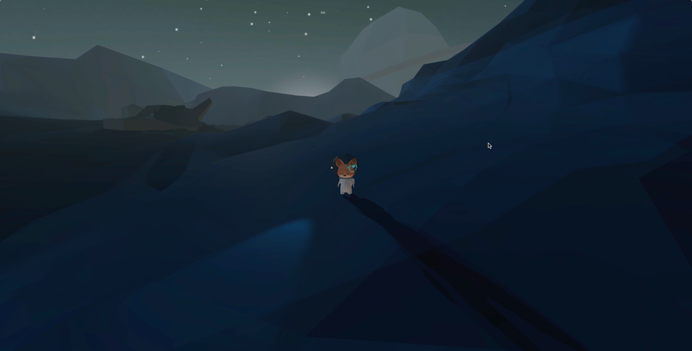
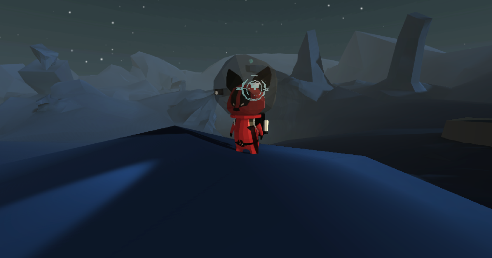
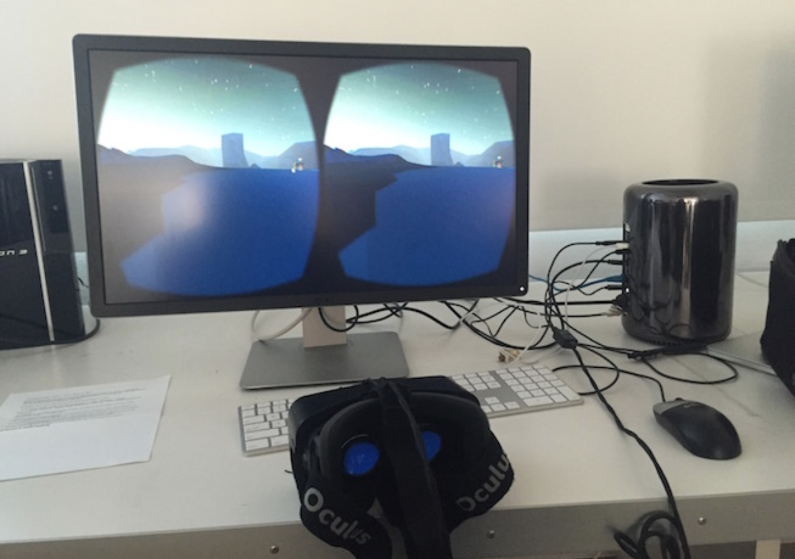
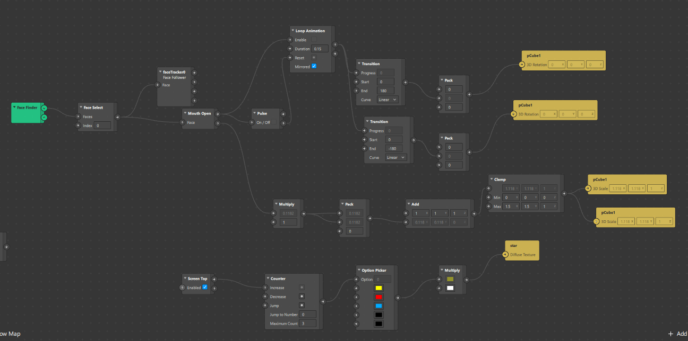
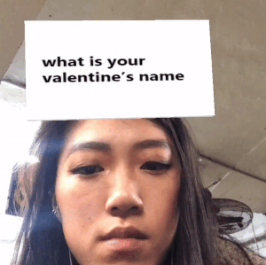
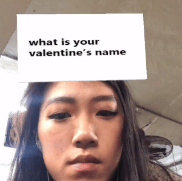
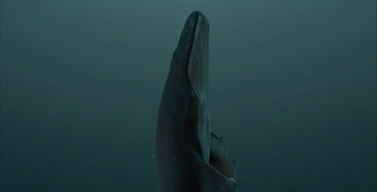
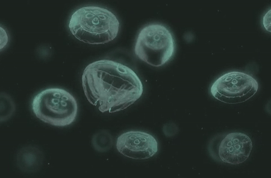

Projects
Demo Reel
For the past 5+ years I have been focusing as a Technical Director for computer graphics in feature films and advertising. My responsibilities have included digitally lighting and overseeing shots through to completion, as well as performing technical optimizations in films and tv shows such as Star Trek Beyond (2016), Batman v Superman (2016), Wonder Woman (2017), The Terror (2018) and more.
I most recently completed a huge project as a technical artist in the cinematics department for Blizzard Entertainment. The short film was a huge success and premiered at BlizzCon 2019 to a live audience of over 40,000 people and even larger audience online. I've included examples of my professional work below:
SpaceFox Unity VR Project (2015)

In 2015 I made a VR space exploration game featuring a fox character. I am responsible for all aspects of the project including concept, design, scripting, lighting, modeling, textures, character rigging, and animation.
The slow gravitational movement and the jetpack particles were scripted manually in C#. I used mainly static lights for the environment, and deferred lights for the fox's flashlight as well as the sun. The GI and occlusion are baked into the environment.
I chose a low-poly aesthetic as a style choice as well as to help with optimization for real-time rendering.
You can view a demo of the game here.


Spark AR Experimentals (2019)
With the recent surge in AR filters, I've developed a curiosity for them and decided to take advantage of my technical/creative and 3d knowledge to try my hand at making a few myself.

I learned the logic of the patch editor nodes in SparkAR to facilitate interactivity and made some quick fun/experimental filters. I'm currently working on personal projects that incorporate my own js scripts into Spark AR.
 Pitta brand face mask filter, inspired by coronavirus

quick "fake" survey filter where the answer is always me
Pitta brand face mask filter, inspired by coronavirus

quick "fake" survey filter where the answer is always me
Shy Animals WebGL project (2014)

Link to project by clicking image above, or here.
This interactive site was my senior project at UCLA, which I completed in my junior year. It utilizes webGL and three.js and a webcam face tracking API to create a virtual reality experience in which the user can change the perspective of the camera by moving their head. Demonstration in the gif below, or try it for yourself!

Slight Night Shiver (2014)

Slight Night Shiver is a personal project I made while studying. Inspired by M83's song of the same name, it is about environmental awareness and features my favorite animal (whales). I am responsible for all aspects of the short, including modeling, texturing, rigging, animation, shading, lighting and compositing of the assets.
I later designed and printed a book that documents the process of creating the CG elements.
click on images to enlarge
About Emily Yang
I am a designer and lighting technical director with experience in feature film vfx, game cinematics, and animated features. My work mainly focuses on 3d computer graphics and interactive coding, but I have a diverse skill set in other elements of design as well.
I was born in Taipei, Taiwan but spent most of my childhood growing up in Vancouver, Canada. I then moved and graduated with a BA in Design Media Arts from UCLA. I enjoy traveling, whale watching, and eating hummus.
I can be reached at emily.yang@ucla.edu, say hi!